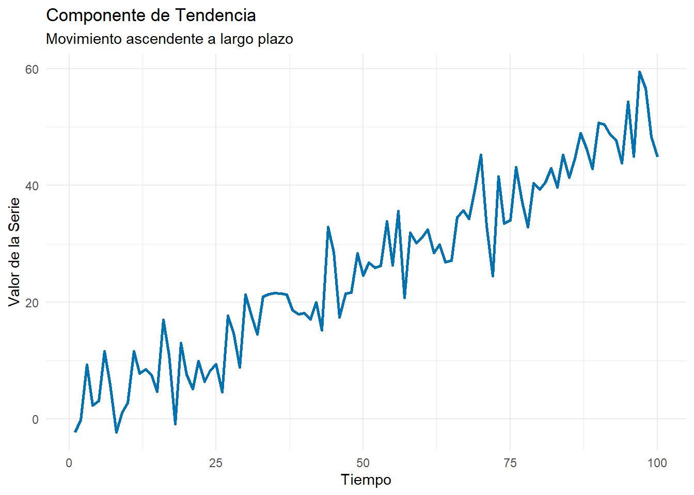
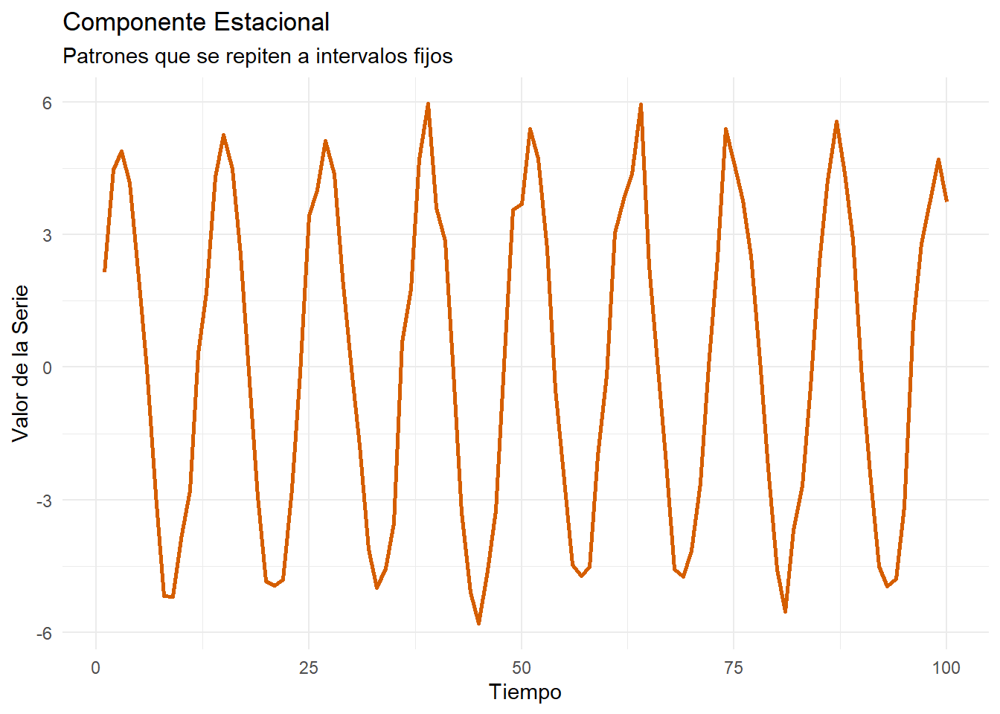
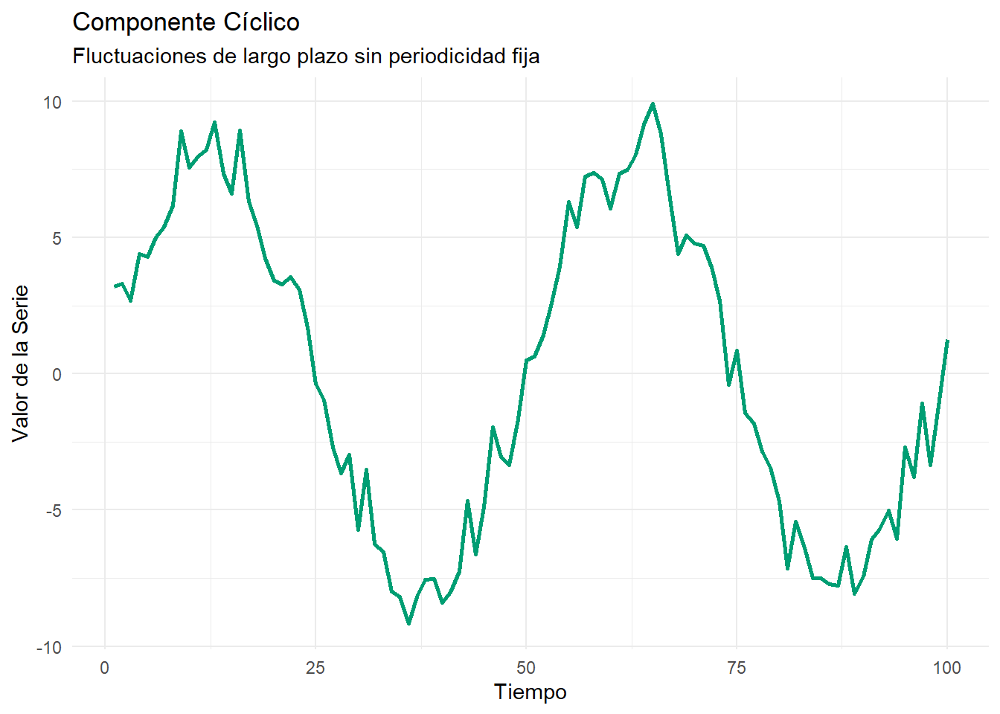
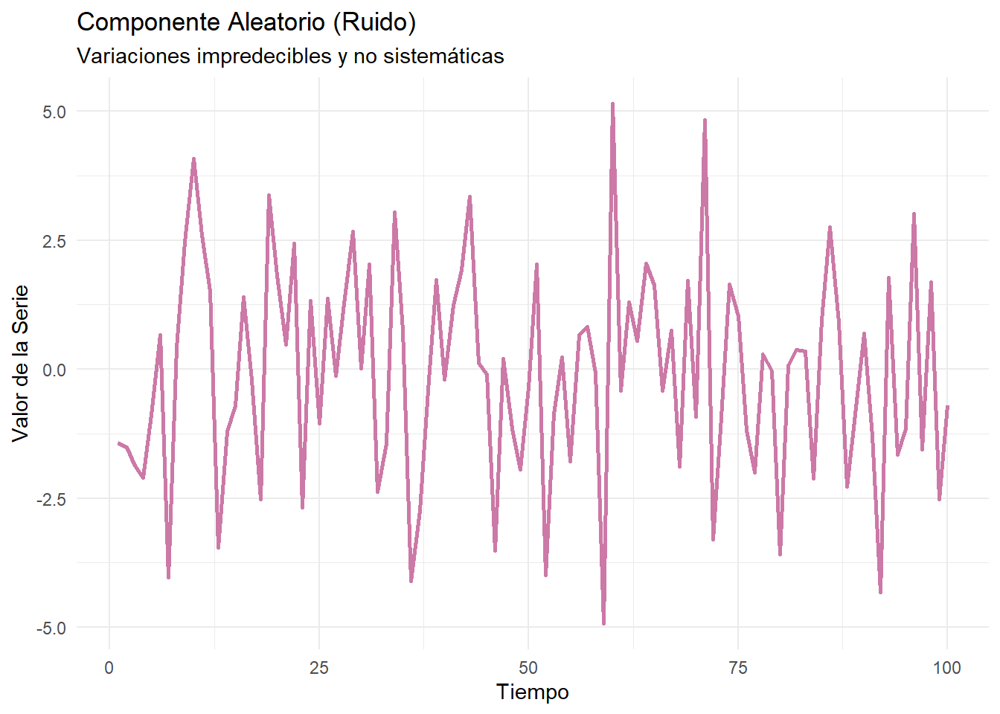

En un sentido intuitivo, una serie de tiempo es un conjunto de observaciones sobre los valores que toma una variable en diferentes momentos. Tales datos pueden ser recopilados a intervalos regulares (diarios, semanales, mensuales, trimestrales, anuales, etc.).
Definición Formal: “Aunque es difícil dar una definición completa del término serie de tiempo, el objetivo principal del análisis de series de tiempo es desarrollar modelos estocásticos que brinden una descripción verosímil del comportamiento de una serie de datos.”
— Gujarati, D. N., & Porter, D. C. (2009). Econometría (5a ed.).
El análisis de series temporales nos permite observar la evolución de una variable a lo largo del tiempo, analizar su dinámica y estudiar correlaciones no contemporáneas entre distintas variables.
2 Componentes de una Serie de Tiempo
Tradicionalmente, se considera que una serie de tiempo puede descomponerse en varios componentes que describen diferentes aspectos de su variabilidad.
2.1 Tendencia
Representa el movimiento de largo plazo de la serie. Es la dirección general (ascendente, descendente o constante) que sigue la serie a lo largo de un periodo extenso.
Sobre la Tendencia: “Una tendencia es un movimiento de largo plazo en una serie de tiempo. Para muchos analistas, encontrar la tendencia es la parte más importante del análisis, ya que con frecuencia forma parte del proceso de pronóstico.”
— Pindyck, R. S., & Rubinfeld, D. L. (2001). Econometría: Modelos y Pronósticos (4a ed.).
Code
# --- Gráfico de Tendencia ---# Creamos datos sintéticos para ilustrar una tendencia lineal.tiempo <-1:100tendencia <-0.5* tiempo +rnorm(100, mean =0, sd =5)datos_tendencia <-tibble(periodo = tiempo, valor = tendencia)# Graficamos con ggplot2ggplot(datos_tendencia, aes(x = periodo, y = valor)) +geom_line(color ="#0072B2", linewidth =1) +labs(title ="Componente de Tendencia",subtitle ="Movimiento ascendente a largo plazo",x ="Tiempo",y ="Valor de la Serie" ) +theme_minimal()

Ejemplo de una serie con tendencia ascendente.
2.2 Estacionalidad
Se refiere a patrones repetitivos y predecibles que ocurren a intervalos regulares, generalmente dentro de un año (ej. mensual, trimestral).
Sobre la Estacionalidad: “Muchas series de tiempo económicas y de negocios presentan un patrón estacional. Por ejemplo, las ventas de abrigos de invierno son consistentemente más altas en los meses de invierno, mientras que las ventas de helado son más altas en el verano.”
— Pindyck, R. S., & Rubinfeld, D. L. (2001). Econometría: Modelos y Pronósticos (4a ed.).
Code
# --- Gráfico de Estacionalidad ---# Usamos una función seno para simular un patrón estacional (ej. mensual).tiempo <-1:100estacionalidad <-5*sin(2* pi * tiempo /12) +rnorm(100, mean =0, sd =0.5)datos_estacionalidad <-tibble(periodo = tiempo, valor = estacionalidad)# Graficamos con ggplot2ggplot(datos_estacionalidad, aes(x = periodo, y = valor)) +geom_line(color ="#D55E00", linewidth =1) +labs(title ="Componente Estacional",subtitle ="Patrones que se repiten a intervalos fijos",x ="Tiempo",y ="Valor de la Serie" ) +theme_minimal()

Ejemplo de un patrón estacional que se repite cada 12 periodos.
2.3 Ciclo
Describe fluctuaciones ondulatorias alrededor de la tendencia, cuya duración suele ser mayor a un año. Estos ciclos no tienen una periodicidad fija como la estacionalidad y a menudo están ligados a los ciclos económicos o de negocio.
Code
# --- Gráfico de Ciclo ---# Usamos otra función seno pero con un período mucho más largo para simular un ciclo.tiempo <-1:100ciclo <-8*sin(2* pi * tiempo /50) +rnorm(100, mean =0, sd =1)datos_ciclo <-tibble(periodo = tiempo, valor = ciclo)# Graficamos con ggplot2ggplot(datos_ciclo, aes(x = periodo, y = valor)) +geom_line(color ="#009E73", linewidth =1) +labs(title ="Componente Cíclico",subtitle ="Fluctuaciones de largo plazo sin periodicidad fija",x ="Tiempo",y ="Valor de la Serie" ) +theme_minimal()

Ejemplo de un ciclo económico con una duración larga y no fija.
2.4 Variación Irregular o Aleatoria (Ruido)
Representa las fluctuaciones aleatorias y no sistemáticas en los datos que no pueden atribuirse a los componentes anteriores. Es el residuo que queda después de que la tendencia, la estacionalidad y el ciclo han sido removidos.
Code
# --- Gráfico de Ruido ---# Generamos ruido blanco a partir de una distribución normal.tiempo <-1:100ruido <-rnorm(100, mean =0, sd =2)datos_ruido <-tibble(periodo = tiempo, valor = ruido)# Graficamos con ggplot2ggplot(datos_ruido, aes(x = periodo, y = valor)) +geom_line(color ="#CC79A7", linewidth =1) +labs(title ="Componente Aleatorio (Ruido)",subtitle ="Variaciones impredecibles y no sistemáticas",x ="Tiempo",y ="Valor de la Serie" ) +theme_minimal()

Ejemplo de ruido blanco: fluctuaciones aleatorias sin un patrón discernible.
3 Naturaleza de una Serie de Tiempo
Describe cómo se combinan los componentes. Los dos enfoques principales son el aditivo y el multiplicativo.
3.1 Naturaleza Aditiva
Los componentes se suman: \(Y_t = T_t + E_t + C_t + I_t\). Este enfoque es apropiado cuando la magnitud de las fluctuaciones estacionales y cíclicas es relativamente constante, sin importar el nivel de la serie.
3.2 Naturaleza Multiplicativa
Los componentes se multiplican: \(Y_t = T_t \times E_t \times C_t \times I_t\). Este modelo es más adecuado cuando la magnitud de las fluctuaciones es proporcional al nivel de la serie.
4 Procesos Estocásticos y Estacionariedad
Para modelar una serie, asumimos que fue generada por un proceso estocástico.
Proceso Estocástico: “Un proceso estocástico (o proceso aleatorio) es una colección de variables aleatorias ordenadas en el tiempo. Si establecemos que una serie de tiempo particular es una realización de un proceso estocástico, implica que el conjunto de datos que vemos es solo uno de los muchos resultados posibles que el proceso estocástico podría haber producido.”
— Enders, W. (2015). Applied Econometric Time Series (4th ed.).
4.1 Ruido Blanco (White Noise)
Es el bloque de construcción más básico. Un proceso de ruido blanco \(\epsilon_t\) cumple con:
No autocorrelación: \(Cov(\epsilon_t, \epsilon_s) = 0\) para \(t \neq s\)
4.2 Estacionariedad
Un concepto crucial en series de tiempo es la estacionariedad. Si las características de un proceso estocástico no cambian con el tiempo, el proceso es estacionario.
Estacionariedad Débil o Covarianza-Estacionaria: Un proceso estocástico se dice que es débilmente estacionario si su media y su varianza son constantes en el tiempo, y si el valor de la covarianza entre dos periodos depende solo de la distancia o rezago entre estos dos periodos, y no del tiempo en el cual se calcula la covarianza.
— Gujarati, D. N., & Porter, D. C. (2009). Econometría (5a ed.).
Serie No Estacionaria: Sus propiedades estadísticas (media, varianza) dependen del tiempo.
4.3 Caminata Aleatoria (Random Walk)
Un modelo de caminata aleatoria se define como: \(y_t = y_{t-1} + \epsilon_t\), donde \(\epsilon_t\) es un ruido blanco. Es un ejemplo clásico de un proceso no estacionario porque su varianza depende del tiempo (\(Var(y_t) = t\sigma^2\)).
5 Referencias
Enders, W. (2015). Applied Econometric Time Series (4th ed.). Wiley.
Gujarati, D. N., & Porter, D. C. (2009). Econometría (5a ed.). McGraw-Hill.
Pindyck, R. S., & Rubinfeld, D. L. (2001). Econometría: Modelos y Pronósticos (4a ed.). McGraw-Hill.